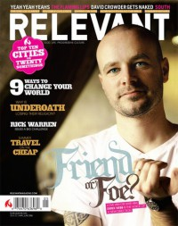

Derek WebbOn the cover
May 2006
Relevant | Media coverage- Feb 1999 in CCM "Backstage: Guitar Noir", by Brian Quincy Newcomb
- Mar 2003 in Group "Ministry and Media: The Church", by Bryan Belknap
- Apr 2003 in CCM "Heading The 'Call'", by Jessica Robin
- Sep 2003 in New Man "Guy Gear: Derek Webb", by Jonathan Heide
- Sep 2004 in CCM "'x' Things You Probably Didn't Know About...: Derek Webb"
- Jul 2005 in CCM "Insider: An Honest Romantic"
- Jan 2006 in CCM "The Lead of Love", by David A. Jenison
- Apr 2006 in CCM "!Songwriters", by Christina A. Banister
- May 2006 in Relevant "The Heart, The Mind, and Politics of the New Church", by Tyler L. Clark
- Dec 2006 in CCM "The New Music Revolution", by John J. Thompson
- Jul 2007 in Prism "Music Notes: Derek Webb's Prophetic Voice", by Josh Miller
- Jul 2007 in HM "Conversant 'Controversialist'", by Brian Quincy Newcomb
- Oct 2007 in Christian Single "Spotlight: Ringing Loud & Clear", by Jewly Hight
- Mar 2008 in Relevant "35 Ideas That Changed The World: Singer/Songwriter", by Tyler L. Clark
- Apr 2009 in Sojourners "Nashville's New Groove"
- Oct 2009 in Christianity Today "Two Minutes With...: Derek Webb"
- Jan 2011 in CCM Digital "Musicians Corner: Writer's Room: Derek Webb"
- Jun 2013 in HM "Derek Webb Doesn't Want Any More Fans", by Robert Houston
- Jul 2013 in CCM Digital "i was wrong, i'm sorry & i love you", by Derek Webb
- Sep 2013 in CCM Digital "Your Home: The 3 Things Everyone Should Learn to Say"
- Sep 2013 in HM "Moving Forward", by Justin Mabee
- Nov 2013 in Relevant "Derek Webb", by Liz Riggs
Albums & reviews:2003: She Must and Shall Go Free 2004: I See Things Upside Down 2005: How to Kill and Be Killed DVD 2013: I Was Wrong, I'm Sorry & I Love You Award Summary (Nominations / Wins)
Dove AwardsPublished articles1 article credited in CCM: 2000.10 articles credited in CCM Digital: 2011 - 2013. |